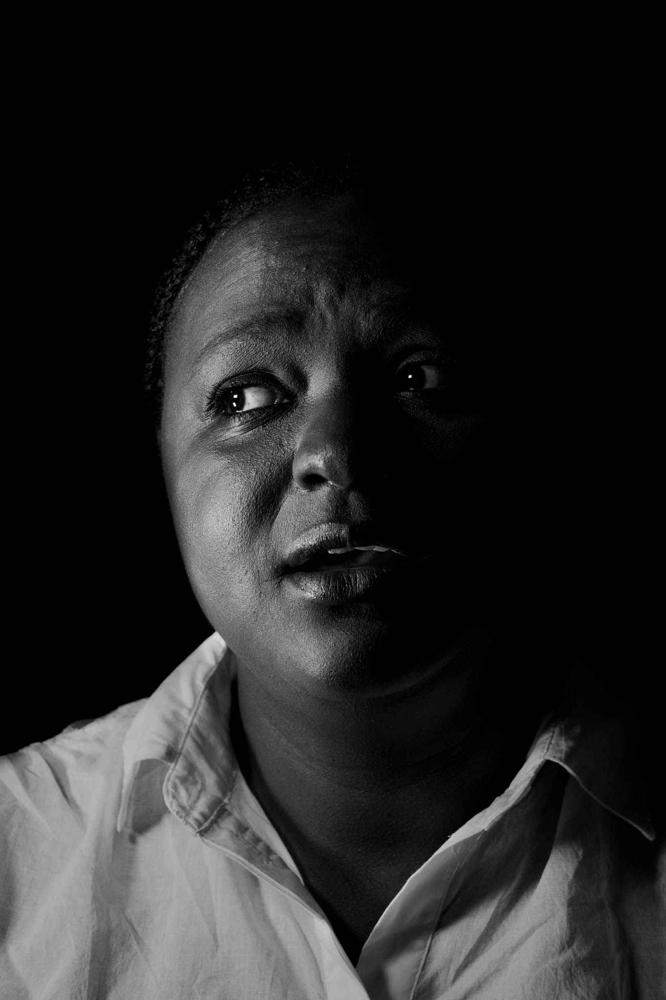
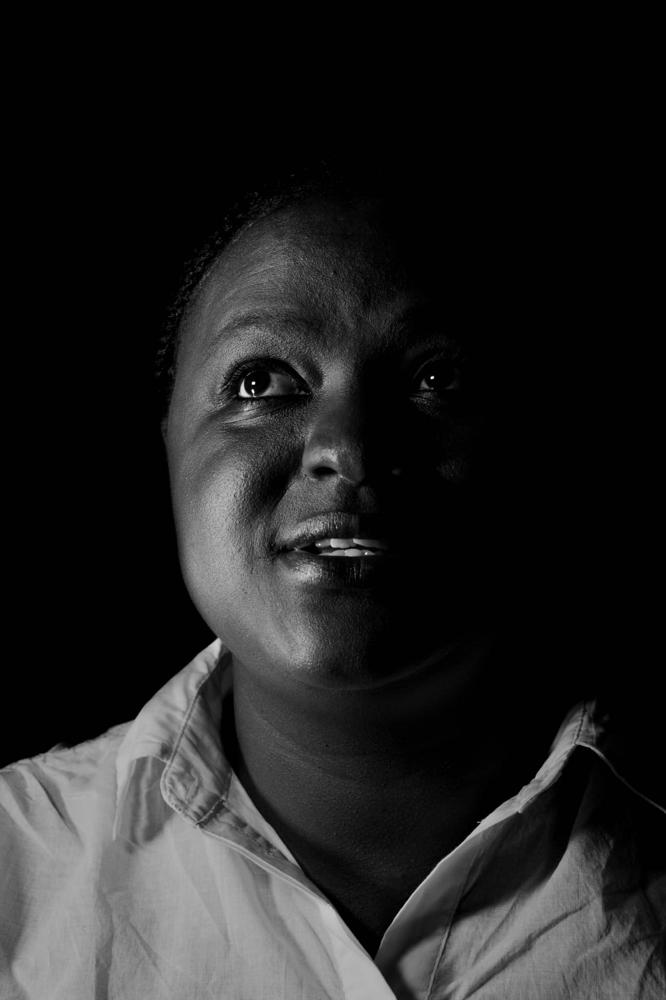
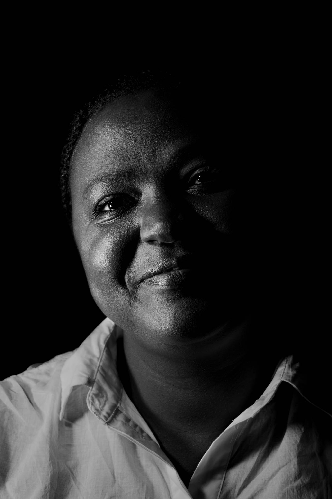

Brenda is a communications specialist working with water and innovation related research.
"Conflicted"

She tells me that coming from Kenya and then having 7 years’ experience in Europe she has struggled with seeing a lack of meaningful impact of a lot of Western research in her country. “I always want to give the African perspective first, but I feel conflicted – because I’m now part of that system and feel obligated to do more – that I should help to find solutions working from the inside.”
"Innovative"

She explains that she sees a lot of talk about the planet, but what she feels is lacking is implementation of already existing solutions. “Sustainable business is the solution to the climate crisis in my opinion – innovation. It’s time the research world collaborated more with business to find solutions”. She tells me that her background and upbringing give her a different perspective: “A large percentage of Nairobi’s youth population is unemployed, so the environment is not their prime concern, unfortunately. Of course, it’s important, but from that perspective there are other urgent things that need to be solved first, so we can get everyone on board.”
"Collaborative"

She also feels collaborative: “It doesn’t matter how much knowledge you have on a subject – there is always something you can learn from a local expert. A fisherman who has worked his whole life on Lake Victoria understands the impact of fishing in the region better than anyone else, for example.” She wishes that people could be more collaborative so that businesses and projects were inclusive and therefore sustainable in the long run.
“I don’t want to be a pessimist, I’m generally a realist”, she explains. “So yes, I’m hopeful. But there is a lot of work that needs to be done to get everybody on board – we need everyone on board if we’re to win this war. Less talk, more action.”